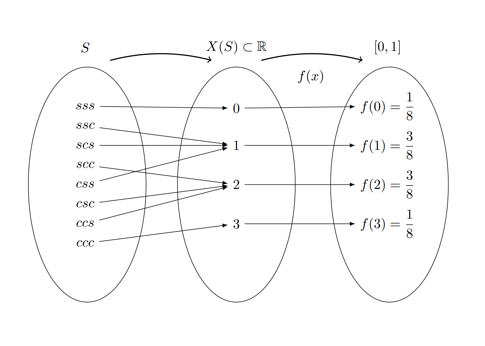
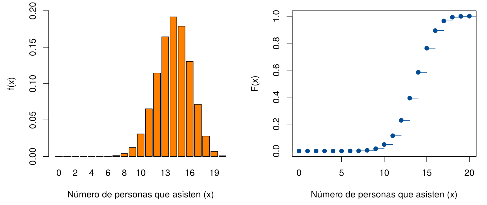
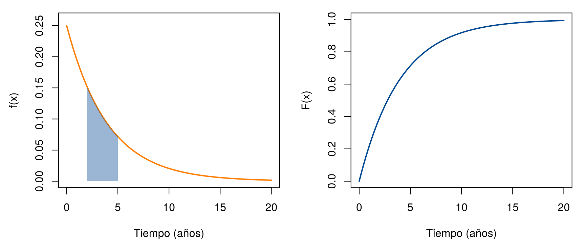

¿Cuánto tiempo tarda un estudiante en llegar a la universidad? ¿Cuántas botellas de agua venderá la cafetería esta semana? ¿Cuántos mensajes llegarán hoy por WhatsApp? ¿Cuánto durará la batería de un celular? Ninguna de estas preguntas tiene una única respuesta: el resultado cambia de una vez a otra.
Una variable aleatoria describe con un número el resultado de un experimento aleatorio. Esta página presenta la definición, los dos tipos de variables aleatorias, discretas y continuas, y las funciones que describen cómo se reparte la probabilidad entre sus valores. Los bloques de código se ejecutan en orden.
Una variable aleatoria \(X\) es una regla que asigna un número a cada resultado del espacio muestral. El conjunto de números que puede tomar se llama rango de la variable y se escribe \(R_X\).
Se lanza una moneda balanceada tres veces y se registra el orden de caras (\(c\)) y sellos (\(s\)). El espacio muestral tiene 8 resultados:
\[ \Omega = \{sss,\ ssc,\ scs,\ scc,\ css,\ csc,\ ccs,\ ccc\} \]
Si \(X\) es el número de caras, la variable asigna a cada resultado un número entre 0 y 3, así que \(R_X = \{0, 1, 2, 3\}\). La figura muestra la regla: cada resultado del espacio muestral va a un valor de \(X\), y cada valor de \(X\) recibe una probabilidad.

Relación entre el espacio muestral, el rango de la variable aleatoria y su función de probabilidad.
Como los 8 resultados son igualmente probables, la probabilidad de cada valor de \(X\) se obtiene contando sus resultados:
| Valor de \(X\) | Resultados | \(P(X = x)\) |
|---|---|---|
| 0 | \(sss\) | 1/8 |
| 1 | \(ssc\), \(scs\), \(css\) | 3/8 |
| 2 | \(scc\), \(csc\), \(ccs\) | 3/8 |
| 3 | \(ccc\) | 1/8 |
En R, se construye el espacio muestral con
expand.grid(), se cuenta el número de caras de cada
resultado con rowSums() y se tabula:
monedas <- expand.grid(m1 = c("c", "s"), m2 = c("c", "s"), m3 = c("c", "s"))
X <- rowSums(monedas == "c") # número de caras de cada resultado
table(X) / nrow(monedas) # P(X = x)X
0 1 2 3
0.125 0.375 0.375 0.125 | Tipo | Valores que toma | Cómo surge | Ejemplos |
|---|---|---|---|
| Discreta | Valores que se pueden contar: \(0, 1, 2, \ldots\) | De un conteo: “número de…” | Número de llamadas a un conmutador en un día, número de hijos de una familia, número de quejas en una sucursal bancaria |
| Continua | Cualquier valor de un intervalo | De una medición | Tiempo que tarda un examen, peso de un recién nacido, diámetro de una perforación, contenido de azúcar de un refresco |
La función de probabilidad de una variable discreta asigna a cada valor \(x\) su probabilidad, \(f(x) = P(X = x)\). Cumple dos condiciones:
En el ejemplo de las monedas, \(1/8 + 3/8 + 3/8 + 1/8 = 1\).
Sea \(X\) una variable aleatoria discreta con función de probabilidad \(f_{X}(x)\). La función de distribución acumulada \(F_{X}(x)\) se define como la probabilidad de que la variable aleatoria tome un valor menor o igual que \(x\):
\(F_{X}(x) = P(X \leq x) = \sum_{t \leq x} f_{X}(t)\)
Propiedades de la función de distribución acumulada:
Esta función es fundamental para caracterizar la distribución de probabilidad de variables discretas y para calcular probabilidades en intervalos específicos. Con \(F_{X}(x)\) se calculan, por ejemplo, las siguientes probabilidades:
| Probabilidad | Cómo se calcula |
|---|---|
| \(P(X \leq a)\) | \(F(a)\) |
| \(P(X > a)\) | \(1 - F(a)\) |
| \(P(a < X \leq b)\) | \(F(b) - F(a)\) |
El restaurante Asados y algo más solo atiende con reserva y recibe 20 reservas por noche. Según sus registros de los últimos años, el 30 % de las personas que reservan no asisten, mientras que el 70 % sí asiste. Al dueño le interesa la variable
porque de ella dependen la comida que debe preparar y los meseros que debe contratar. \(X\) es una variable discreta: puede tomar los valores \(0, 1, 2, \ldots, 20\).
¿Por qué el modelo binomial? La situación cumple cuatro condiciones:
Cuando se cumplen estas condiciones, el número de éxitos sigue una distribución binomial con \(n = 20\) y \(p = 0.7\), y su función de probabilidad es
\[ f_X(x) = \binom{20}{x}(0.7)^{x}(0.3)^{20 - x}, \qquad x = 0, 1, \ldots, 20 \]
Cada parte de la fórmula tiene un significado:
Un cálculo a mano. La probabilidad de que asistan exactamente 14 personas es
\[ f_X(14) = \binom{20}{14}(0.7)^{14}(0.3)^{6} = 38\,760 \times 0.006782 \times 0.000729 = 0.1916 \]
Hay 38 760 formas de escoger a las 14 personas que asisten, y cada una de esas formas tiene probabilidad \(0.006782 \times 0.000729\). En R se puede reproducir cada parte:
choose(20, 14) # formas de escoger a las 14 que asisten[1] 387600.7^14 * 0.3^6 # probabilidad de una de esas formas: 4.94e-06 = 0.00000494[1] 4.944246e-06choose(20, 14) * 0.7^14 * 0.3^6 # f(14)[1] 0.191639Toda la distribución en R. Calcular a mano las 21 probabilidades sería largo. R lo hace con dos funciones, que se estudian en detalle en Modelos discretos:
dbinom(x, size, prob) calcula la función de
probabilidad, \(f_X(x) = P(X =
x)\).pbinom(x, size, prob) calcula la función de
distribución acumulada, \(F_X(x) = P(X \leq
x)\).El argumento size es el número de ensayos (\(n = 20\)) y prob, la
probabilidad de éxito (\(p = 0.7\)). El
código siguiente:
x con los valores posibles, de 0 a
20.x <- 0:20
fx <- dbinom(x, size = 20, prob = 0.7) # f(x) = P(X = x)
Fx <- pbinom(x, size = 20, prob = 0.7) # F(x) = P(X <= x)
sum(fx) # las probabilidades suman 1[1] 1round(data.frame(x, fx, Fx)[11:21, ], 4) # valores de 10 a 20 x fx Fx
11 10 0.0308 0.0480
12 11 0.0654 0.1133
13 12 0.1144 0.2277
14 13 0.1643 0.3920
15 14 0.1916 0.5836
16 15 0.1789 0.7625
17 16 0.1304 0.8929
18 17 0.0716 0.9645
19 18 0.0278 0.9924
20 19 0.0068 0.9992
21 20 0.0008 1.0000Cómo leer la tabla. Cada fila tiene un valor de \(x\), su probabilidad \(f_X(x)\) y la probabilidad acumulada \(F_X(x)\):
fx muestra que los valores más probables
están alrededor de 14: \(f_X(14) =
0.1916\) es la probabilidad más alta. Tiene sentido, porque el 70
% de 20 es 14.Fx se obtiene sumando la
columna fx hasta cada fila. Por ejemplo, \(F_X(14) = F_X(13) + f_X(14) = 0.3920 + 0.1916 =
0.5836\).La figura muestra las dos funciones. En la de la izquierda, la altura de cada barra es \(f_X(x)\). En la de la derecha, cada escalón sube exactamente la altura de la barra correspondiente.
par(mfrow = c(1, 2), mar = c(4.5, 4.5, 1, 1))
barplot(fx, names.arg = x, col = "#FF7F00", ylim = c(0, 0.2),
xlab = "Número de personas que asisten (x)", ylab = "f(x)")
plot(stepfun(x, c(0, Fx)), verticals = FALSE, pch = 19, col = "#034A94",
xlim = c(0, 20), ylim = c(0, 1), main = "",
xlab = "Número de personas que asisten (x)", ylab = "F(x)")
Función de probabilidad (izquierda) y función de distribución acumulada (derecha) del número de personas que asisten.
Algunas preguntas que se responden con estas funciones:
dbinom(14, 20, 0.7) # P(X = 14)[1] 0.191639pbinom(14, 20, 0.7) # P(X <= 14)[1] 0.58362921 - pbinom(14, 20, 0.7) # P(X > 14)[1] 0.4163708pbinom(16, 20, 0.7) - pbinom(11, 20, 0.7) # P(12 <= X <= 16)[1] 0.7795817Una variable continua puede tomar infinitos valores, así que no se puede hacer una lista de probabilidades. Se usa una función de densidad, \(f(x)\), cuya gráfica es una curva. La probabilidad de que \(X\) esté entre \(a\) y \(b\) es el área bajo la curva entre esos dos valores:
\[ P(a \leq X \leq b) = \int_a^b f(x)\,dx \]
La función de densidad cumple dos condiciones: nunca es negativa y el área total bajo la curva es 1.
En una variable continua, \(P(X = a) = 0\) para cualquier valor \(a\): un solo punto no tiene área. Por eso, \(P(a \leq X \leq b)\) y \(P(a < X < b)\) son iguales. La altura \(f(x)\) no es una probabilidad; solo el área lo es.
Igual que en el caso discreto, \(F(x) = P(X \leq x)\). Para una variable continua, es el área bajo la curva desde el extremo izquierdo hasta \(x\). Es una curva suave que empieza en 0, nunca baja y llega a 1. Las reglas para calcular probabilidades son las mismas de la tabla anterior.
Un fabricante de lavadoras sabe, por sus datos históricos, que el tiempo \(X\) (en años) hasta que una lavadora necesita una reparación mayor tiene esta función de densidad:
\[ f(x) = \frac{1}{4}\,e^{-x/4}, \qquad x \geq 0 \]
y \(f(x) = 0\) para \(x < 0\). Al integrar se obtiene la función de distribución acumulada, \(F(x) = 1 - e^{-x/4}\) para \(x \geq 0\).
En R, la densidad se escribe como una función y la
función integrate() calcula el área bajo la curva. Primero
se comprueba que el área total es 1:
f <- function(x) (1/4) * exp(-x/4)
integrate(f, lower = 0, upper = Inf)1 with absolute error < 2.7e-05¿Cuál es la probabilidad de que la lavadora necesite una reparación mayor en los primeros 3 años? Es el área entre 0 y 3:
\[ P(X \leq 3) = F(3) = 1 - e^{-3/4} = 0.5276 \]
¿Y entre 2 y 5 años?
\[ P(2 \leq X \leq 5) = F(5) - F(2) = e^{-2/4} - e^{-5/4} = 0.3200 \]
F_acum <- function(x) 1 - exp(-x/4)
integrate(f, lower = 0, upper = 3)$value # P(X <= 3) como área[1] 0.5276334F_acum(3) # P(X <= 3) con la acumulada[1] 0.5276334F_acum(5) - F_acum(2) # P(2 <= X <= 5)[1] 0.3200259par(mfrow = c(1, 2), mar = c(4.5, 4.5, 1, 1))
curve(f, from = 0, to = 20, col = "#FF7F00", lwd = 2, ylim = c(0, 0.26),
xlab = "Tiempo (años)", ylab = "f(x)")
xs <- seq(2, 5, length.out = 100)
polygon(c(2, xs, 5), c(0, f(xs), 0), col = adjustcolor("#034A94", 0.4), border = NA)
curve(F_acum, from = 0, to = 20, col = "#034A94", lwd = 2, ylim = c(0, 1),
xlab = "Tiempo (años)", ylab = "F(x)")
Función de densidad (izquierda), con el área sombreada que corresponde a P(2 ≤ X ≤ 5), y función de distribución acumulada (derecha) del tiempo hasta una reparación mayor.
| Problema | Causa | Solución |
|---|---|---|
| Confundir una variable discreta con una continua | No se identificó si la variable cuenta o mide | Preguntar si surge de un conteo (“número de…”) o de una medición |
| Leer la altura de la densidad como una probabilidad | En una variable continua, la probabilidad es un área | Calcular el área entre dos valores |
| \(P(12 \leq X \leq 16)\) calculado como \(F(16) - F(12)\) en una variable discreta | Se dejó por fuera el valor 12 | Usar \(F(16) - F(11)\) |
| \(P(X > a)\) calculado como \(F(a)\) | Se confundió “mayor que” con “menor o igual que” | Usar \(1 - F(a)\) |
| Las probabilidades de una tabla no suman 1 | Falta un valor o hay un error de cálculo | Revisar con sum() |
Clasifique cada variable: (a) número de accidentes en una ciudad en un día; (b) tiempo de entrega de un domicilio; (c) número de huevos que produce una granja en un día; (d) proporción de cemento en una mezcla de concreto.
Se lanzan dos dados y \(X\) es la suma. Construya su función de probabilidad en R y calcule \(P(X \leq 4)\) y \(P(X > 9)\).
dados <- expand.grid(d1 = 1:6, d2 = 1:6)
suma <- dados$d1 + dados$d2
fx_suma <- table(suma) / 36
round(fx_suma, 4)suma
2 3 4 5 6 7 8 9 10 11 12
0.0278 0.0556 0.0833 0.1111 0.1389 0.1667 0.1389 0.1111 0.0833 0.0556 0.0278 mean(suma <= 4) # P(X <= 4) = 6/36[1] 0.1666667mean(suma > 9) # P(X > 9) = 6/36[1] 0.1666667En el ejemplo del restaurante, ¿cuál es la probabilidad de que asistan al menos 18 personas? ¿Y de que asistan menos de 10?
1 - pbinom(17, 20, 0.7) # P(X >= 18) = 1 - F(17)[1] 0.03548313pbinom(9, 20, 0.7) # P(X < 10) = F(9)[1] 0.01714482La probabilidad de que asistan al menos 18 es 0.0355 y la de que asistan menos de 10, 0.0171.
Con la densidad del ejemplo de las lavadoras, calcule la probabilidad de que una lavadora funcione más de 10 años sin una reparación mayor. ¿Antes de cuántos años la necesita la mitad de las lavadoras?
\(P(X > 10) = 1 - F(10) = e^{-10/4} = 0.0821\). Para la mitad se busca \(x\) tal que \(F(x) = 0.5\): \(1 - e^{-x/4} = 0.5\), de donde \(x = 4 \ln 2 = 2.77\) años.
1 - F_acum(10)[1] 0.0820854 * log(2)[1] 2.772589dbinom(),
pbinom(), integrate() y
stepfun().Última revisión: 7 de noviembre de 2026.